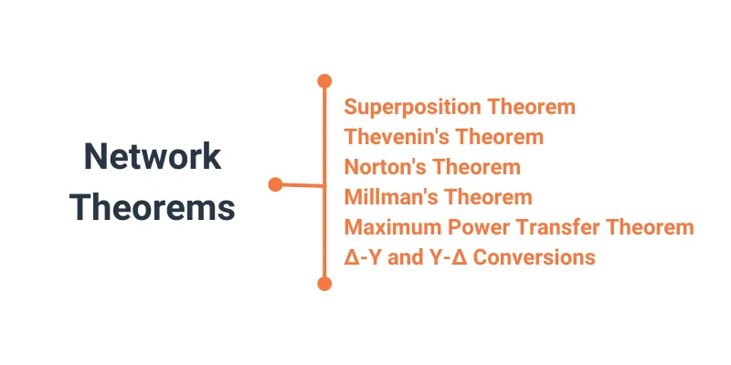

While Ohm’s law and Kirchhoff’s voltage and current laws can be used to solve any electrical circuit, there are some helpful network theorems that we will introduce to make the analysis easier.
Anyone who’s studied geometry should be familiar with the concept of a theorem: a relatively simple rule used to solve a problem derived from a more intensive analysis using fundamental rules of mathematics.
At least hypothetically, any problem in math can be solved by using the simple rules of arithmetic. In fact, this is how modern digital computers carry out the most complex mathematical calculations—by repeating many cycles of addition and subtraction. However, human beings aren’t as consistent or as fast as digital computers. We need shortcut methods to avoid procedural errors.
In electric network analysis, the fundamental rules are Ohm’s law, Kirchhoff’s voltage law (KVL), and Kirchhoff’s current law (KCL). These basic laws may be applied to analyze just about any circuit configuration.
However, as we have seen with our use of the branch current method and the mesh current method, we typically must resort to complex algebra to handle multiple unknown values. As with any theorem of geometry or algebra, these network theorems are derived from the fundamental circuit laws.
In this chapter, we’ll introduce these six network theorems that you will find helpful in analyzing electrical circuits:
It’s important to note that we will not delve into the formal proofs of any of these theorems. If you doubt their validity, you can always empirically test them by setting up example circuits and calculating values using the simultaneous equation methods versus the “new” theorems to see if the answers coincide.